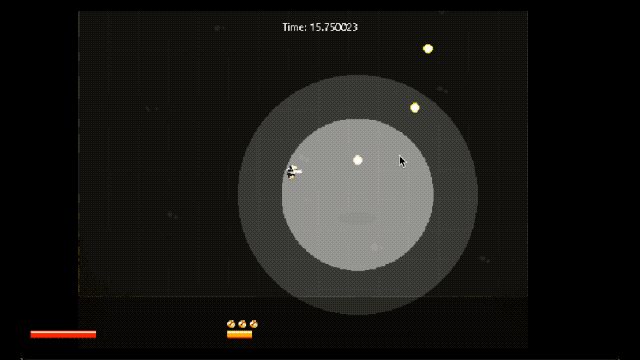
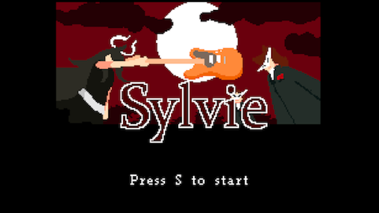
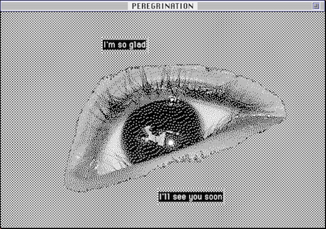
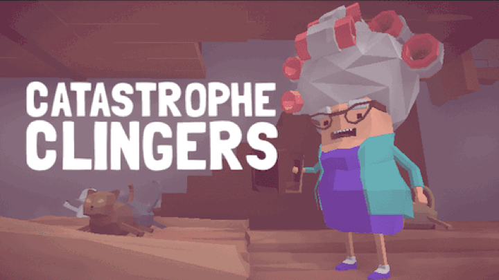
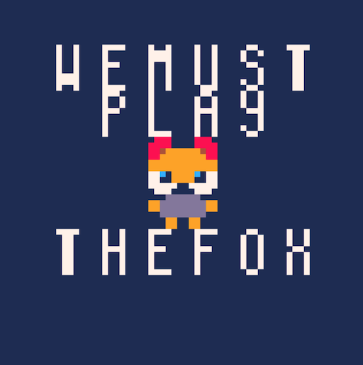

Ferra
Frenetic Bullet-Hell Boss Rush, created with Toffee using the Monogame framework for Boss Rush Jam 2023.
Roles: Boss AI & Mechanics implementation, Audio Integration, Sound Design, Music
Knight's Tail: Tactics

Knight's Tail is a prototype of a procedural tactical RPG in which players traverse across a world map through a series of tactical skirmishes in order to reach an objective tile. The primary purpose of this prototype is to test this TRPG traversal mechanic, while remaining scalable to fit a range of potential scopes. Developed in Unity.
Roles: Concept, Programming, Shaders, Art, Animation, UI, Sound Design, Music
Gloam

Spooky-cute procedural city generator, solo-developed in Unity. Climb buildings. Glide around. Enjoy the ambience as the spirits of Gloam go about their day.
Roles: Concept, Programming, Art, Animation, Procedural Audio & Music Implementation
Sylvie
Fast-paced platformer developed with Toffee for Magical Girl Jam 2020.
Roles: Concept, Writing, Sound Design, Music.
Peregrination
A reflective hypercard point-and-click adventure, developed for Hyperjam 2020.
Roles: Design & Implementation in Hypercard.
Catastrophe Clingers
2020 entry for Global Game Jam: A sandbox game about holding your crumbling world together with cats. Developed with Andrew Wang
Roles: SFX, Music, Modeling, Cat Paintings
Marshmallow Exodus

Lead your Marshmallow flock to safety, but watch out for hungry gummybears! Developed with a small team for Global Game Jam 2019.
Roles: Sound Design
Where We Are
A VR Audio Installation Piece. Created as a Masters Thesis Project at Berklee College of Music and displayed at the Museum of Science at the City of Arts and Sciences in Valencia, Spain.
Roles: Programming, Modeling, Particle Effects, Design, Audio Implementation.
We Must Play The Fox
Collect eggs, avoid Chickens! an 8 bit procedural egg hunting game developed in a week with a small team for Lowrez Jam
Roles: Music & Sound Design